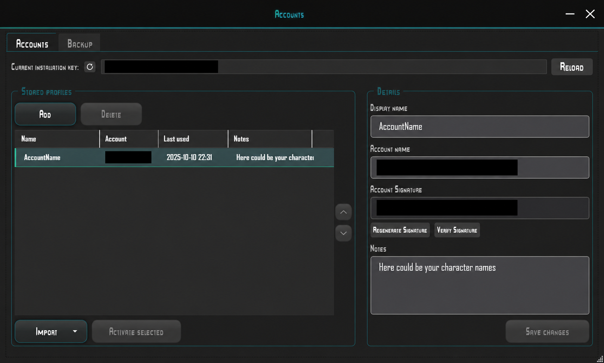
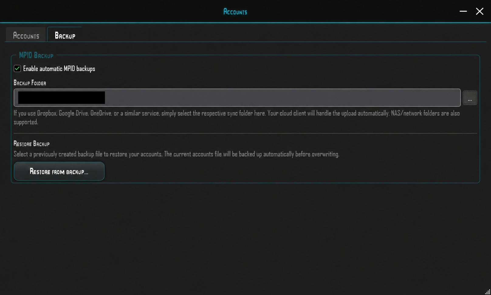

Schritt für Schritt
Dein gewünschtes Profil verwenden
- 1
Quelle wählen
Importiere vorhandene Accounts aus ADF, FLIDs.ini oder der aktuellen Registry. Add erzeugt dagegen eine neue Account-ID.
- 2
Profile benennen und ordnen
Vergib passende Display names, trage Charakternamen in Notes ein und ordne Profile mit den Pfeilen.
- 3
Änderungen speichern und sichern
Bestätige Save changes und richte eine geschützte Sicherung ein. Prüfe bei Fehlern das Log.
- 4
Gewünschten Account aktivieren
Wähle dein Profil und nutze Activate selected. Das geht auch bei geöffnetem Spiel im Serverauswahl-Menü, ohne Neustart. Ein Import allein aktiviert den Account nicht.
Account Manager öffnen

Öffne den Account Manager über das AID-Symbol in der oberen Werkzeugleiste. Im Reiter Accounts stehen gespeicherte Profile links und die Details des ausgewählten Profils rechts.
Add fügt ein Profil hinzu. Wähle ein Profil, bearbeite Display name und Notes und bestätige mit Save changes. Notizen können dir helfen, die zugehörigen Charaktere zu erkennen.
Activate selected wählt das markierte Profil aus. Import bietet Importoptionen; die Pfeile dienen zur Reihenfolge der Profile. Delete entfernt ein Profil – sichere wichtige Account-Daten vorher.
Die aktuelle Installations-ID wird oben angezeigt. Rechts findest du Account name und Account Signature sowie Verify Signature und Regenerate Signature. Die echten Kennungen sind in dieser Aufnahme verdeckt. Teile sie nicht in öffentlichen Screenshots.
Anzeigenamen, Charakternamen und Reihenfolge
Wähle links einen Account und gib ihm unter Display name einen passenden, wiedererkennbaren Namen, etwa „Hauptaccount – Händler“ oder „Clan – Eskorte“. Der Anzeigename ist dein lokales Label; er ändert weder die Account-ID noch die Charakternamen im Spiel.
Unter Notes kannst du die zugehörigen Charakternamen speichern, beispielsweise „Orion – Frachter; Vega – Jäger“. Ergänze bei Bedarf Rollen oder andere Merkhilfen. Diese Notizen pflegst du selbst; sie werden nicht automatisch aus dem Spiel abgerufen.
Wähle einen Eintrag und verschiebe ihn mit den Pfeilen rechts neben der Liste jeweils eine Position nach oben oder unten. So ordnest du häufig genutzte Accounts zuerst. Am Anfang beziehungsweise Ende ist der entsprechende Pfeil deaktiviert.
Klicke nach Änderungen an Name, Notizen oder Reihenfolge auf Save changes. Auch nach Add, Delete und Import sind Änderungen zu speichern. Beim Schließen mit ungespeicherten Änderungen fragt der Launcher nach.
Accounts aus ADF importieren
Öffne das Import-Menü und wähle den ADF-Import. Wähle deine vorhandene Account Data File mit der Endung .adf. Eine beliebige Datei erhält durch Umbenennen kein gültiges ADF-Format.
Der Import übernimmt Anzeigenamen, Account-ID, Signatur und vorhandene Kommentare als Notes. Verwende eine vollständige Originaldatei: Der Import benötigt Account-ID und Signatur; unvollständige Datensätze werden nicht übernommen.
Der Ergebnisdialog nennt gefundene und neu hinzugefügte Accounts sowie übersprungene Duplikate. Ein Account mit derselben ID und Signatur wie ein gespeicherter Eintrag wird übersprungen. Bestehende Namen und Notizen werden dadurch nicht aktualisiert.
Prüfe die importierten Profile, passe Anzeigenamen und Notizen an und klicke Save changes. Erst Activate selected setzt ein ausgewähltes Profil als aktuellen Multiplayer-Account.
Accounts aus FLIDs.ini importieren
Wähle im Import-Menü den FLID-Changer-Import und öffne deine vorhandene FLIDs.ini (.ini). Gemeint ist die Account-Datei des FLID Changer, nicht irgendeine Konfigurationsdatei der Crossfire-Installation.
Der Import liest die Account-Abschnitte mit INSTALL, MAN und MANS. Alle drei Werte müssen vorhanden und nicht leer sein. Der Abschnittsname wird zunächst zum Anzeigenamen; DISC wird als Notiz übernommen. Benenne einen technischen Namen wie FLID_1 anschließend passend um.
Die vorhandenen Accounts bleiben erhalten; Einträge mit bereits gespeicherter Account-ID und Signatur werden übersprungen. Prüfe die Importstatistik und speichere mit Save changes. Der Import allein wechselt deinen aktiven Account nicht.
Den aktuellen Account aus der Registry übernehmen
Wähle im Import-Menü die Übernahme des aktuellen Registry-Accounts. Der Launcher liest den derzeit für diesen Windows-Benutzer eingetragenen Freelancer-Multiplayer-Account. Das ist kein Import aller früher verwendeten Accounts.
Ist diese Account-ID bereits in der Liste, wird das vorhandene Profil ausgewählt. Andernfalls entsteht ein neues Profil mit einem automatisch vergebenen Namen und der vorhandenen Signatur. Gib ihm einen passenden Display name, ergänze Charakternamen unter Notes und bestätige Save changes.
Activate selected aktiviert das ausgewählte Profil für Multiplayer. Du kannst dazu im Serverauswahl-Menü bleiben und die Warnung mit Yes bestätigen; das Spiel muss nicht neu gestartet werden. Wechsle nicht, solange du mit einem Charakter auf einem Server spielst.
Importmeldungen verstehen und beheben
„No valid accounts found“: Die Datei enthält keine lesbaren vollständigen Accounts. Prüfe die Importquelle und verwende eine intakte Originaldatei. Bei ADF müssen ID und Signatur vorhanden sein; bei FLIDs.ini zusätzlich INSTALL. Eine andere Dateiendung behebt fehlende Daten nicht.
„All … account(s) … already exist“: Alle erkannten Accounts sind bereits gespeichert. Das ist kein fehlgeschlagener Import. Prüfe die vorhandenen Einträge; der Import überschreibt ihre Notizen und Anzeigenamen nicht.
„Failed to import accounts from ADF/FLIDs file“: Lies den konkreten Zusatz im Dialog und im Log. Wähle die Datei erneut, falls sie verschoben wurde. Bei Zugriffsproblemen verwende eine lesbare lokale Kopie; bei beschädigten Daten eine intakte Originaldatei oder Sicherung. Abbrechen im Dateidialog ist kein Fehler.
„No account detected …“ beim Registry-Import: Für diesen Windows-Benutzer wurde keine aktuelle Account-ID gefunden oder die Registry konnte nicht gelesen werden. Prüfe über Reload erneut und suche im Log nach „Could not read the account name from registry“. Verwende eine vorhandene Account-Datei oder Sicherung, wenn dort keine ID vorhanden ist. Add erzeugt eine neue Identität und stellt einen alten Account nicht wieder her.
Warnung beim Accountwechsel: Spiel läuft noch
„Transponder Override Warning“ erscheint, wenn du Activate selected verwendest, während Freelancer noch läuft. Der Launcher fragt nach, bevor er den Account wechselt. Die Warnung bedeutet nicht, dass dein Account bereits beschädigt ist.
Du kannst den Account wechseln, während du im Serverauswahl-Menü bist. Lass das Spiel geöffnet, wähle im Account Manager den gewünschten Account, klicke Activate selected und bestätige die Warnung mit Yes. Danach kannst du dich mit dem gewählten Account verbinden. Ein Neustart des Spiels ist dafür nicht nötig.
Bist du noch mit einem Charakter auf dem Server, wähle No und kehre zuerst zur Serverauswahl zurück. Ein Accountwechsel während des Spielens kann Probleme mit deinen Charakterdaten verursachen. No bricht den Wechsel ab; dein bisheriger Account bleibt aktiv. Alternativ kannst du das Spiel schließen, den Account wechseln und anschließend erneut starten.
Aktivierung, Signaturen und Speicherfehler
„Could not write account to the registry“: Dein ausgewählter Account konnte nicht aktiviert werden. Prüfe seine ID und Signatur und lies den Fehler im Log. Wenn dort ein Zugriff verweigert wird, kann ein Start mit Administratorrechten nötig sein. Versuche danach die Aktivierung erneut.
„Account name is empty“: Es fehlt die technische Account-ID, nicht der Display name. Verwende die richtige ID aus deiner Sicherung. „Signature mismatch“ bedeutet, dass ID und Signatur nicht zusammenpassen. Prüfe zuerst die ID; erst danach kann Regenerate Signature die passende Signatur berechnen. Speichere anschließend. Eine gültige Signatur bestätigt nicht, dass deine Charaktere auf einem Server vorhanden sind.
Delete ist beim aktiven Account deaktiviert. Um ihn aus der lokalen Liste zu entfernen, aktiviere zuerst einen anderen Account. Löschen aus dieser Liste ersetzt keine Sicherung der alten ID.
„Saving accounts failed“ wird im Log gemeldet. Prüfe den genannten Pfad, freien Speicher und Schreibzugriff. Speichere erneut, bevor du den Manager schließt; Änderungen sind bei einem Fehler nicht zuverlässig gesichert.
Bei „Unable to retrieve pilot records“ oder Meldungen zu einer beschädigten Accounts-Datei bewahre die vorhandenen Dateien auf und verwende eine bekannte intakte Sicherung. Prüfe bei fehlgeschlagenem Backup zusätzlich den Zielordner und die Erreichbarkeit eines Netzwerk- oder Cloud-Ordners. Für weitere Hilfe teile Fehlermeldung und Diagnosepaket, aber keine Account-IDs, Signaturen oder Account-Sicherungen öffentlich.
DigitalProductId fehlt beim Erstellen eines Accounts
Beim Hinzufügen eines neuen Accounts über Add kann die Meldung „DigitalProductId not found in either registry view.“ erscheinen. Dem Launcher fehlt dann ein benötigter Registry-Wert für die neue Account-ID.
Aktualisiere zuerst auf Launcher-Version 1.7.6 oder neuer und versuche es erneut. Diese Version behebt den Fehler, wenn der Wert nur in der anderen Windows-Registry-Ansicht vorhanden ist.
Bleibt der Fehler bestehen, kannst du eine Neuinstallation von Freelancer versuchen. Sichere vorher deine Account-Daten und Spielstände. Anschließend muss Crossfire wieder installiert werden. Eine Neuinstallation ist keine garantierte Lösung, wenn der benötigte Windows-Registry-Wert weiterhin fehlt.
Wenn du bereits einen Account hast, kannst du ihn stattdessen aus ADF, FLIDs.ini oder der aktuellen Registry importieren beziehungsweise eine Account-Sicherung wiederherstellen. Dafür muss keine neue Account-ID erzeugt werden.
Import, Export und Backup

Im Reiter Backup aktiviert Enable automatic MPID backups die automatische Sicherung. Wähle über die Schaltfläche … bei Backup Folder einen Sicherungsordner.
Du kannst einen synchronisierten Dropbox-, Google-Drive- oder OneDrive-Ordner wählen. Dein Cloud-Client übernimmt den Upload. NAS- und Netzwerkordner werden ebenfalls unterstützt.
Restore from backup… öffnet die Auswahl einer bereits erstellten Sicherungsdatei. Vor dem Überschreiben wird die aktuelle Accounts-Datei automatisch gesichert.
Bewahre Account-Sicherungen geschützt auf. Sie sind etwas anderes als das Diagnosepaket aus dem Log-Fenster und gehören nicht in einen öffentlichen Fehlerbericht.